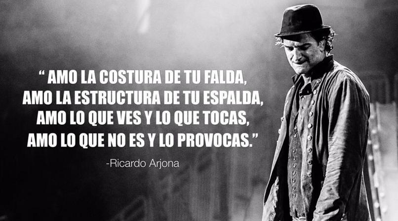

Queremos darte la bienvenida a este blog, donde encontrarás todo lo que necesitas saber de tus artistas románticos.
Artistas: Ricardo Montaner, Ricardo Arjona, entre otros
Grupos Musicales: Sin Bandera, Camila, etc
Top 10 con sus videos para que los puedas reproducir
Letras de tus canciones favoritas
Acordes musicales
Puedes hacer tus comentarios para ayudarnos a mejorar nuestro blog.
Frases de Ricardo Arjona

Realmente no estoy tan solo, ¿quién te dijo que te fuiste? Si uno no está donde el cuerpo, sino donde más lo extrañan. Y a ti se te extraña tanto.
Y ese miedo idiota de verte viejo y sin pareja; te hace escoger con la cabeza lo que es del corazón.
No se acaba el amor solo con decir adiós, hay que tener presente que el estar ausente no anula el recuerdo, ni compra el olvido, ni nos borra del mapa.
Y juro por mi qué solo fui por un café, pero te vi.
Desde niño fui aprendiendo que la religión no es más que un método con el titulo "prohibido pensar" que ya todo esta escrito.
Hay amor tan ingrato, quítame solo una duda, si eres tú el que se muere o soy yo el que te mato.
Aun te amo, no se si por iluso o fatalista, no se si por cobarde o masoquista.
Frases de Ricardo Montaner
Soy un tipo exitoso porque estoy feliz.
Las tonterías más grandes pueden dejarte grandes cicatrices en tu vida.
Creo que el principal escalón de mi vida profesional no lo he subido todavía.
No vale de nada tener todo cuando al final no tienes nada. Se puede tener todo y a la vez no tener nada.
El amor es una evolución, es una transformación continua, es una búsqueda inteligente de no aburrir, una búsqueda de un día diferente todos los días.
Gente enferma de poder a la que deberíamos prohibirle olvidar que estamos acá porque nos puso Dios.
Mi motivación más importante es no solamente el amor que he vivido, si no que el amor que vivo y que me toca por vivir todavía.